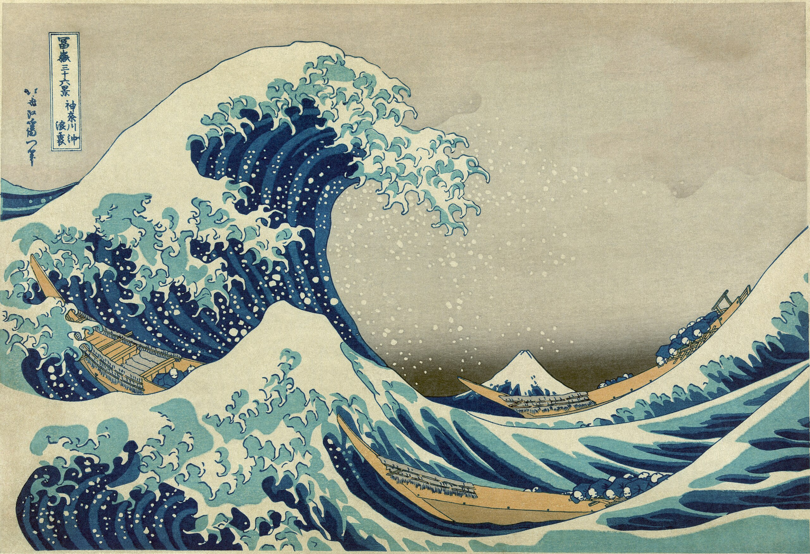

Caso curioso #1: El origen del manga moderno
Publicado por el equipo de Geek&Manga
Cuando pensamos en manga, imaginamos viñetas dinámicas, líneas de velocidad y expresiones exageradas que le dan vida a cada historia. Pero, ¿de dónde viene realmente este estilo tan característico?
Aunque Japón cuenta con una larguísima tradición de narrativa gráfica —desde los rollos ilustrados "emakimono" del período Heian hasta las estampas "ukiyo-e" del período Edo—, el manga tal como lo conocemos hoy tomó forma recién a mediados del siglo XX. Uno de los nombres clave en esta historia es Osamu Tezuka, creador de obras como "Astro Boy", quien incorporó técnicas narrativas inspiradas en el cine: planos cerrados, encuadres dinámicos y una edición de viñetas que guiaba el ritmo de lectura casi como una película fotograma a fotograma.
Esta fusión entre la tradición ilustrativa japonesa y el lenguaje cinematográfico occidental dio origen a un formato narrativo completamente nuevo: historias largas, serializadas en revistas semanales o mensuales, con géneros para todas las edades y gustos —shonen, shojo, seinen, josei— que permitieron que el manga se convirtiera en una industria masiva dentro y fuera de Japón.
Hoy, el manga no solo se lee: se colecciona, se exhibe y se celebra en convenciones alrededor del mundo. Cada tomo que llega a nuestra tienda es parte de esa larga historia de evolución artística y narrativa que sigue creciendo con cada nueva generación de lectores.
← Volver a Blogs